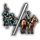
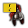

欧陆风云4的四百年历史被划分为4个时代（英文：Age），每个时代均持续约90年。不同时代间的最根本区别是各自的特殊规则（宗教 vs. 专制）和潜在的灾难。许多事件或决议在旧版本中的年份限制也已替换为时代限制。
在未启用DLC  天命时，这4个时代仍然存在，但下文描述的机制均不可用。当目标达成时，将提升力量投射并提供月度 辉煌点数奖励，辉煌点数在本时代结束前可用。激活每个时代能力需要花费 800 辉煌点数。
天命时，这4个时代仍然存在，但下文描述的机制均不可用。当目标达成时，将提升力量投射并提供月度 辉煌点数奖励，辉煌点数在本时代结束前可用。激活每个时代能力需要花费 800 辉煌点数。
辉煌点数
| 只适用于DLC天命激活时。 |
每个时代都包含7个与当前时代相关的目标。每一个已完成的时代目标，都将使国家获得 +3 力量投射和每月 +2 的辉煌点数。辉煌点数用于购买时代专属能力，它们是国家能够在本时代所余时间内享受的各种临时增益。每个时代都含有7种每个国家都可以购买的通用能力；以及4个特定国家的专有能力——这些国家都是在真实历史中的一时天骄。当时代结束时，所有的辉煌点数以及购买的能力都会消失，力量投射开始衰减——换言之所有上一时代的收获都会在新时代被重置。
有一些时代目标实现后，仍然可能会失效。例如，「三个王座」的目标，在失去一个被联统国后将失效。失效的目标将不再给予额外的辉煌点数，但仍然可以再次实现目标从而恢复辉煌点数的奖励。
辉煌点数的其他来源
| 传统 | 理念 | 奖励/野心 | 政策 | |
|---|---|---|---|---|
| （不可识别的修正类型「monthly splendor」，请在Template:Bonus table处添加） | ||||
来自伟大工程:
|
|
只适用于DLC利维坦激活时。 |
- 拥有伊斯法罕（429），省份宗教属于穆斯林宗教组，且与拥有者国教相同，并拥有伟大工程 世界之景广场： +0.5 每月辉煌点数；
 +1 每月辉煌点数；
+1 每月辉煌点数；  +1.5 每月辉煌点数。
+1.5 每月辉煌点数。 - 拥有门泰谢（319），并拥有伟大工程 哈利卡那索斯的摩索拉斯陵墓： +0.5 每月辉煌点数； +1 每月辉煌点数； +1.5 每月辉煌点数。
- 拥有佛罗伦萨（116），省份宗教属于基督教宗教组，且与拥有者国教相同，并拥有伟大工程 圣母百花大教堂： +0.5 每月辉煌点数； +1 每月辉煌点数； +2 每月辉煌点数。
- 拥有中河间地（524），省份宗教属于穆斯林宗教组，且与拥有者国教相同，并拥有伟大工程 泰姬陵： +1 每月辉煌点数； +2 每月辉煌点数。
- 拥有特拉凯（270），并拥有伟大工程 特拉凯城堡： +0.5 每月辉煌点数； +1 每月辉煌点数； +1.5 每月辉煌点数。
{kind=link}
{kind=link}
{kind=link}
{kind=link}
{kind=link}
{kind=link}
政府改革咨议会行政制可在拥有100点咨议会共识的情况下给予+4 每月辉煌点数。
国家任务法兰克人的王国完成后也会给予+1.5 每月辉煌点数。
黄金时代
一个在当前时代完成至少3项时代目标的国家，可以选择进入为期50年的「黄金时代」。在黄金时代的有效期内进入下一时代不会导致黄金时代结束。
黄金时代中的国家获得以下增益：[1]
| −10% | 全点数花费 | |
| +10% | 陆军士气 | |
| +10% | 海军士气 | |
| +10% | 商品产出修正 | |
| +5 | 专制度上限 | |
| +5 | 革命热情上限 |
以下可以让国家将当前的黄金时代视任务说明延长。
 奥斯曼完成任务第二次伊斯兰黄金时代后，作为穆斯林宗教组国家通过第二次伊斯兰黄金时代的决议，能够延长50年。
奥斯曼完成任务第二次伊斯兰黄金时代后，作为穆斯林宗教组国家通过第二次伊斯兰黄金时代的决议，能够延长50年。 卡斯蒂利亚或
卡斯蒂利亚或 西班牙完成任务帝国事务后，能够延长30年。
西班牙完成任务帝国事务后，能够延长30年。 波兰立陶宛联邦完成任务主导市场后，能够延长30年。
波兰立陶宛联邦完成任务主导市场后，能够延长30年。 芬兰完成任务波罗的海帝国后，能够延长20年。
芬兰完成任务波罗的海帝国后，能够延长20年。
 完成中国皇帝任务盛世与治世或朝鲜、日本对应任务后，能够延长20年。
完成中国皇帝任务盛世与治世或朝鲜、日本对应任务后，能够延长20年。- 完成中华群雄任务统一中国，能够延长20年。
- 触发国家事件大报恩寺琉璃塔后，完成 eunuchs agenda 议程「扩建琉璃塔」，能够延长10年。
以下可以允许重新开启黄金时代：
- 奥斯曼完成任务第二次伊斯兰黄金时代后，作为穆斯林宗教组国家通过第二次伊斯兰黄金时代的决议
- 卡斯蒂利亚或 西班牙完成任务帝国事务
- 波兰立陶宛联邦完成任务主导市场
- 芬兰完成任务波罗的海帝国
- 完成中国皇帝任务盛世与治世或朝鲜、日本对应任务
 法兰西完成任务主宰欧洲
法兰西完成任务主宰欧洲
地理大发现时代
那些锐意进取的国家在这个时代，看到了称雄世界的根基。
地理大发现时代是游戏最初出现的时代，（严格地说）开始于1400年，一直持续到新教出现后第10年（1510年左右，历史剧本中为1530年）。这个时代应用宗教规则（如教廷的特殊能力等）。
本时代的潜在灾难包括：农民战争、内战、阿拉贡王嗣、柬埔寨黑暗时代、马里的衰落、满者伯夷的陨落、格拉纳达王位继承战争、普鲁士联盟、卡斯蒂利亚内战和玫瑰战争。
时代目标
| 只适用于DLC天命激活时。 |
| 目标 | 描述 | |
|---|---|---|
| 发现美洲 | 当首都在欧洲、亚洲或者非洲时，发现北美洲、南美洲或者随机新世界大陆的任意一个省份。 | |
| 发达国家 | 当首都不在欧洲、亚洲或者非洲时，有至少100 | |
| 控制贸易中心 | 拥有并控制五个至少拥有2级贸易中心的核心省份。 | |
| 大城市 | 拥有并控制一个至少30 | |
| 接受文艺复兴 | 接受 文艺复兴思潮且所有省份都完成思潮传播。 | |
| 三个王座 | 作为基督教国家拥有至少两个 | |
| 封建社会 | 作为非基督教国家拥有至少5个 | |
| 地跨两大洲 | 拥有两个不同大洲上的省份。 | |
| 羞辱宿敌 | 通过和平协议羞辱一次宿敌。 |
{kind=link}
{kind=link}
{kind=link}
{kind=link}
{kind=link}
{kind=link}
{kind=link}
{kind=link}
{kind=link}
时代能力
| 只适用于DLC天命激活时。 |
| 能力 | 效果 | |
|---|---|---|
| 合法分封 | 允许法令 “合法分封”（ | |
| 正当战争 | ||
| 转移附庸 | 通过和平协议转移附庸的花费减半；允许毗邻现有宣称伪造宣称。 | |
| 改良战争税 | −100% 战争税花费。 | |
 |
骑兵部队 | |
| 发达的殖民地 | 当殖民地成长为城市时获得 | |
| 适应的地形 | 当在和首都地形相同的省份战斗时获得 +1 作战加成。 | |
| 乌尔班大炮 | ||
| 葡萄牙殖民地增长 | ||
| 丹麦的忠诚附属国 | ||
| 威尼斯贸易 | +50% 船只贸易力量（ |
{kind=link}
{kind=link}
{kind=link}
{kind=link}
{kind=link}
{kind=link}
{kind=link}
{kind=link}
{kind=link}
{kind=link}
{kind=link}
宗教改革时代
宗教改革时代是游戏中的第二个时代，这个时代在第一个新教改革中心（取决于天主教改革呼声）出现10年后触发，是八十年战争（1579）和三十年战争（1618）书签的开局所处时代，这个时代继续应用宗教规则（如教廷的特殊能力等）。
本时代的潜在灾难包括：农民战争、伯爵之乱、法国宗教战争、混乱时期和宗教动乱。
时代目标
| 只适用于DLC天命激活时。 |
| 目标 | 描述 | |
|---|---|---|
| 加入宗教改革 | 接受 | |
| 人文或是宗教 | 完成 人文或者 | |
| 省份传教 | 转化10个省份的宗教为国教（计入地理大发现时代完成的转化次数）。 | |
| 建立殖民帝国 | 至少拥有5个 | |
| 转化其他国家 | 通过战争、附属国互动或者强制宗教统一等手段强迫另一个国家信奉你的宗教。（计入地理大发现时代完成的转化） | |
| 亚洲贸易 | 获得 | |
| 文化统一 | 拥有所属文化组的所有省份。 注：你的殖民领拥有的同文化省份并不视为你拥有。换句话说，如果你有殖民领，那么你无法完成这个目标。你也可以通过驱逐少数族群以确保殖民区域上没有与你同文化的省份 |
{kind=link}
{kind=link}
{kind=link}
{kind=link}
{kind=link}
{kind=link}
{kind=link}
时代能力
| 只适用于DLC天命激活时。 |
| 能力 | 效果 | |
|---|---|---|
| 宗教强制法令 | 允许直属州法令 “宗教强制”（+100% 对宗教改革的抵抗性）。 | |
| 浮动炮台 | +1 封锁对攻城的影响。 | |
| 宗教战争 | −25% 对其他宗教国家的战争分数花费。 | |
| 雇佣兵训练 | ||
| 强力商船 | ||
| 思潮传播 | +50% 在国教省份的思潮传播速度。 | |
| 皈依威望 | 省份传教完成时每发展度 | |
| 西班牙陆军元帅 | | |
| 莫卧儿炮兵 | +15% 炮兵作战能力（ | |
| 波兰王冠 | ||
| 波斯启蒙主义 |
{kind=link}
{kind=link}
{kind=link}
{kind=link}
{kind=link}
{kind=link}
{kind=link}
{kind=link}
{kind=link}
{kind=link}
{kind=link}
专制主义时代
专制主义时代是游戏中的第三个时代，开始于全球贸易思潮出现后第10年（约1610年）。在这个时代，宗教规则（如教廷的特殊能力等）失效，专制度机制取而代之。
时代目标
| 只适用于DLC天命激活时。 |
| 目标 | 描述 | |
|---|---|---|
| 3个贸易公司 | 拥有3个 | |
| 多座大学 | 拥有并控制至少5所大学。 | |
| 大军的潜力 | ||
| 专制主义 | 至少拥有90 | |
| 中国皇帝 | 成为中国皇帝且天命值不低于50。 | |
| 多元化国家 | 至少拥有5个 | |
| 赢得宗教战争 | 是神圣罗马帝国宗教同盟战争的胜利方。 |
{kind=link}
{kind=link}
{kind=link}
{kind=link}
{kind=link}
{kind=link}
{kind=link}
时代能力
| 只适用于DLC天命激活时。 |
| 能力 | 效果 | |
|---|---|---|
| 专制法令 | 允许法令 “专制法令”（ | |
| 灵活的宿敌 | −50% 改变宿敌花费。 | |
| 卫国要塞 | −100% 宿敌边界上的要塞维护费。 | |
| 高效自治 | −50% 自治度改变冷却时间。 | |
| 更残酷的镇压 | −50% 残酷镇压花费。 | |
| 行政效率 | ||
| 专制政府 | ||
| 法兰西专制主义 | ||
| 尼德兰商业化 | +33% 贸易引导（ | |
| 瑞典征兵制 | ||
 |
满洲八旗 |
{kind=link}
{kind=link}
{kind=link}
{kind=link}
{kind=link}
{kind=link}
{kind=link}
{kind=link}
{kind=link}
{kind=link}
{kind=link}
大革命时代
大革命时代是游戏中的第四个也是最后一个时代，开始于启蒙主义思潮出现后第10年（通常约为1710年），持续到游戏结束。在这个时代，专制机制继续生效。
时代目标
| 只适用于DLC天命激活时。 |
| 目标 | 描述 | |
|---|---|---|
| 议会 | 政府拥有议会。 | |
| 皇帝 | 成为神圣罗马帝国皇帝，或者建立你自己的帝国！ | |
| 强大的附属国 | 有一个至少250 | |
| 高训练度 | 有至少 | |
| 大都会 | 首都至少50 | |
| 治军名将 | 有一个3星的将军或者海军上将指挥一个单位。 | |
| 控制思潮 | 控制2个思潮起源地。 |
{kind=link}
{kind=link}
{kind=link}
{kind=link}
{kind=link}
{kind=link}
{kind=link}
时代能力
| 只适用于DLC天命激活时。 |
| 能力 | 效果 | |
|---|---|---|
| 反革命热忱 | −33% 来自附属国发展度导致的独立倾向。 | |
| 拿破仑战术 | +3 炮兵对要塞的围城奖励。 | |
| 改良强行军 | 强行军不再消耗 | |
| 海军交战 | +20% 海军接战宽度。 | |
| 自由征服 | 无视距离造核。 | |
| 改良炮兵射程 | +20% 后排炮兵伤害。 | |
| 忠诚的附庸 | ||
| 普鲁士训练 | −20% 受到的火力伤害（ | |
| 大英帝国舰队 | +1 海军将领火力上限（ | |
| 俄罗斯帝国 | -10% 自治领地最低自治度（ | |
| 奥地利坚韧 | -20% 受到的士气打击（ |
{kind=link}
{kind=link}
{kind=link}
{kind=link}
{kind=link}
{kind=link}
{kind=link}
{kind=link}
{kind=link}
{kind=link}
{kind=link}
参考资料
- ↑ 参见/Europa Universalis IV/common/static_modifiers/00_static_modifiers.txt（Static modifiers#黄金时代）。